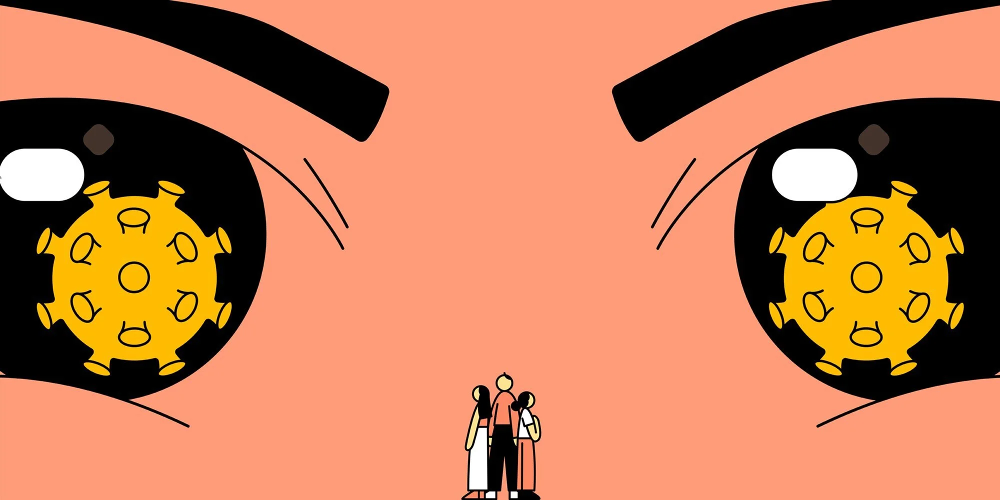
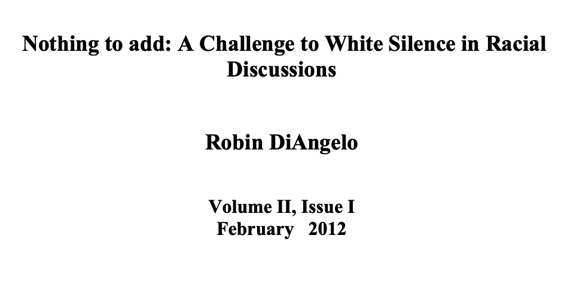
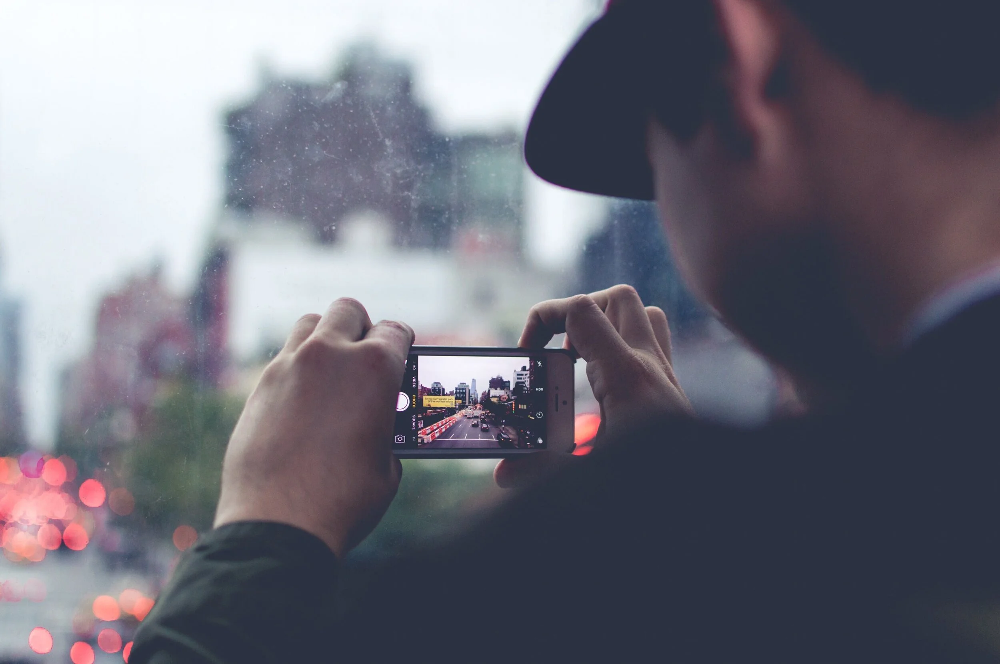
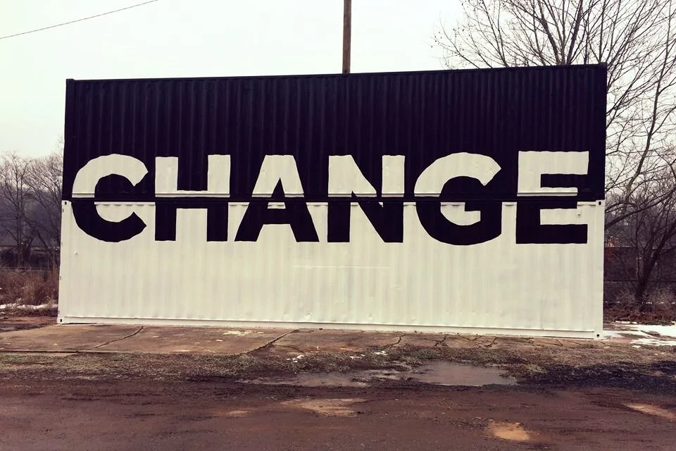
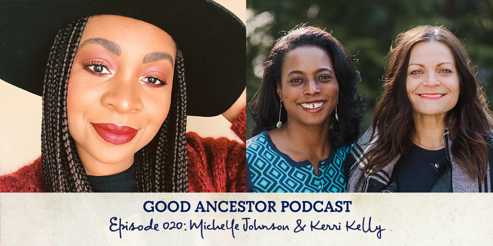

2020-03-22
Our White Silence Is Violence Lets Be Upstanders Not Bystanders
As I sit here preparing this month’s blog and pondering my cold symptoms, I can’t help but think about the way that racism and my own white privilege is impacting my experience of the coronavirus pandemic. As a consultant, most of my income comes from being out in the community facilitating workshops and participating in meetings of both small and large groups of people. Workshops and meetings are canceling left and right, and I am starting to be concerned about how that will affect my ability to pay my bills in the next month. I cannot help but to think of all the people, who have no cushion to fall back on, who do not have the privileges that I do. Many organizations are asking people to work remotely. What about folks whose jobs cannot be done remotely, who work for hourly wages and don’t get paid when they aren’t at work? Not surprisingly many of the people who are most at risk for getting the virus are the same ones that are most at risk for the fallout--not having money to buy food, pay rent, get medication and treatment or even get to places where they can get treatment. I am being called to keep doing my work, to dig deep, open myself up and stop being a bystander. I hope you’ll join me.
See you on the journey,
Robin

Coronavirus Reveals How Quickly “Model Minority” Asians Become the “Yellow Peril” by Matthew Lee
This article gives concrete examples of racism rearing its ugly head. I would love to think that I’m immune to bias but I am not. I work with several healthcare organizations and have been having many conversations about my own unconscious and covert racist thoughts about disease spread, As with all my racist thoughts, it's far from pleasant to discuss them but that is the only way I’m ever going to work to change them. This, like the following article, is a good one to open up a conversation with folks you are trying to engage in conversations about the manifestations of racism.
https://www.nbcnews.com/think/opinion/coronavirus-fears-show-how-model-minority-asian-americans-become-yellow-ncna1151671

Nothing to Add: A Challenge to White Silence in Racial Discussions by Robin DiAngelo
I had a chance recently to be in a conversation with a group of other white people about this article. We spent some time talking about ways that each of us stay silent and the stories we tell ourselves about why. I found myself nodding my head along with others as we talked (I do that. Yup, I’ve felt that too.) As much as I open myself up to self-inspection, it never ceases to amaze me how deeply rooted my fears and biases are and how shame continues to try to bring me down. What I understand is that I need to come face-to-face with the things about myself that feel shameful like my silence and complicity. When I continue to push those thoughts and feelings into my subconscious, they end up causing harm to myself and others because they always find their way back out with a vengeance. Reading this article and sharing it with others helps to bring some of the “ugly” to the surface so that I can metabolize the shame that is useful and release that of which is not helpful to me or anyone else.
https://robindiangelo.com/2018site/wp-content/uploads/2016/01/Nothing-to-Add-Published.pdf

The Spectacle of Knowing, Watching and Doing Nothing by Caleb Houseknecht
This piece starts with a video that prompted the author to write it. I shook my head as I watched and listened to the scene that played out for over 6 minutes. Unfortunately, I know that this scene is not an anomaly. My heart raced and my gut tightened, as I thought, “how come no one is saying anything, why doesn’t anyone step in to do something?” The author talks about his own reaction and experiences of staying silent. It made me ask myself, “who am I to judge and how many times have I sat silent waiting for someone else to speak up or step in?”. My white privilege shields me from these encounters, which can come as daily onslaught to People of Color. It allows me to distance myself emotionally and physically and to have the CHOICE to be silent and remain in my safe little bubble. I am more deeply starting to understand that when I remain silent, I am perpetuating violence. My not speaking is actually speaking quite loudly. It’s saying that what is happening is ok with me. That is not who I want to be!
https://medium.com/@caleb_p_house/the-spectacle-of-knowing-watching-and-doing-nothing-d6612f951498

Converting Hidden Spiritual Racism Into Sacred Activism: An Open Letter to Spiritual White Folks by Virginia Rosenberg
Someone who read last month's blog shared this with me. She told me that what I said about spiritual bypassing made her think about this article. Thank you RA, this is a beautiful piece. The author, Virginia Rosenberg, dives deeper into how this plays out in spiritual communities and ways we can do better. She says that we are “spreading violence and aggression under the guise of love and light. I don’t know about you, but that felt like a splash of cold water to the face. It sure woke me up. She says later in the article: “It can be painful to own racism within ourselves. It can be challenging to our identity, our sense of inner stability, and it can break our hearts. It can bring us to our knees.” It certainly has and continues to bring me to my knees on countless occasions and what keeps me coming back up is the knowledge that I am not free unless we are all free. This is a beautiful, profound and activating article that filled my heart with sadness, hope and empathy.
https://virginiarosenberg.com/blog/2016/7/10/converting-hidden-spiritual-racism-into-sacred-activism-an-open-letter-to-spiritual-white-folks

Layla F. Saad, Good Ancestor Podcast
Last month, I shared a moving video by Michelle Johnson. In this podcast, Layla speaks with Michelle and Kerri Kelly, co-founders of Race and Resilience. I don’t think it’s a coincidence that this podcast was just emailed to me as I was preparing for this blog. I am profoundly amazed and humbled by the power of the Universe. I am again reminded that this power is always there for me to tap into when I am open. This is 1 hour and 19 minutes long and so well worth it. Michelle and Kerri talk a lot about their own relationship and what it’s like for them to work across racial differences. I was so filled by this conversation and blessed to be able to experience it. You don’t want to miss listening to this conversation with three fierce, amazing women.
http://laylafsaad.com/good-ancestor-podcast/ep020-michelle-johnson-kerri-kelly
Exciting Announcement!
Announcing Virtual Supervision, Coaching, and Consultancy!
I am excited to announce that I have created some new packages for my anti-racist/ anti-oppressive focused supervision and coaching sessions. I offer individual and small group sessions both virtually and in-person. I work with white people and people of color, although my primary focus is in supporting other white people to:
unpack and deconstruct internalized racial superiority.
examine both the intent and consequences of their actions.
develop a deeper awareness of how power and privilege affect the way they navigate and experience the world.
help create accountable partnerships and practices.
If you or anyone you know who could benefit from and would be interested, in these services, please share this message and share with me their contact information (with their approval) so that I can reach out to them directly.
Feel free to give me a call if you have any questions or suggestions.
In solidarity and partnership,
Robin